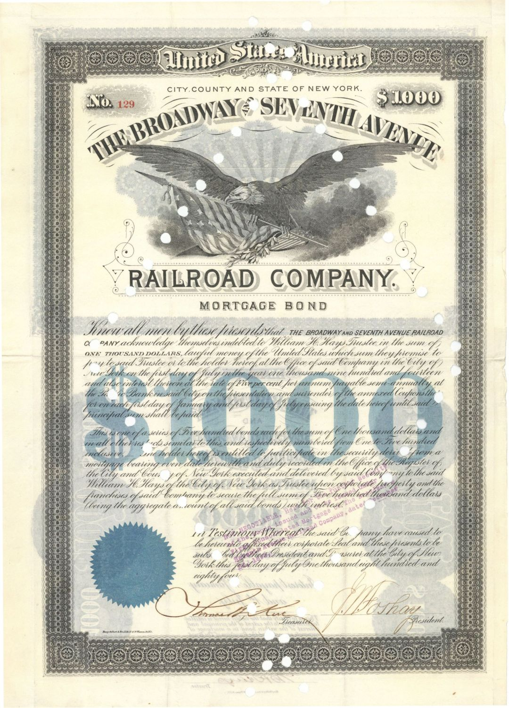
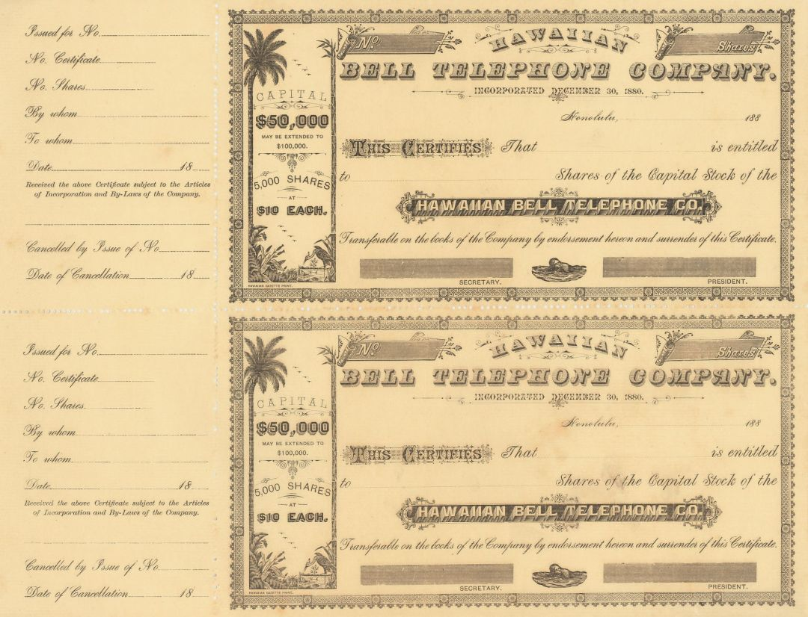
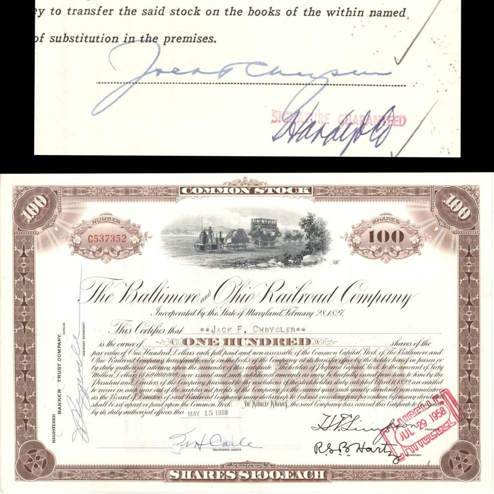
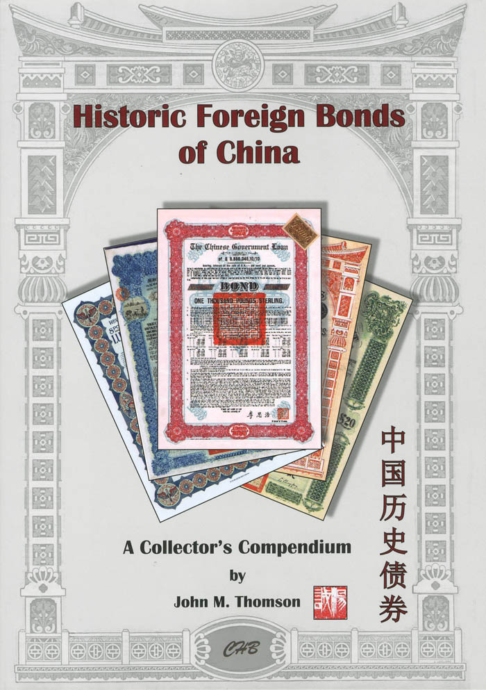
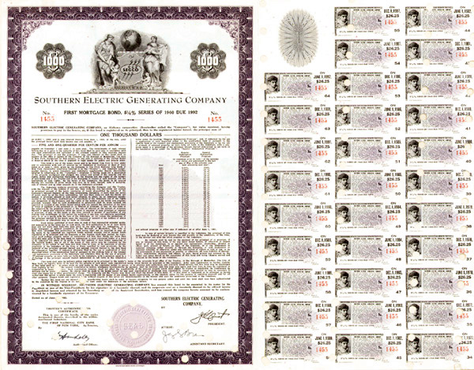
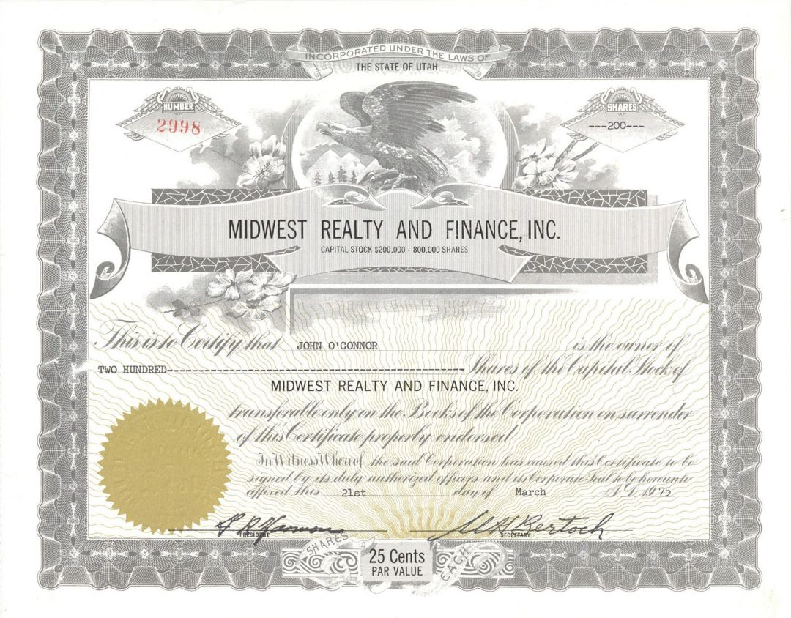

Notes on collecting, authenticating, and caring for original financial and historical Americana.

What the vignettes, coupons, and endorsements on a 19th-century bond can tell you.

Why unissued specimen certificates are prized by collectors and archivists alike.

A look at the industrialists whose names turn a certificate into a document of history.

The references every scripophily collector should keep within arm’s reach.

Simple, archival habits that keep certificates crisp for the next generation.

Rarity, condition, signatures, and eye-appeal — and how they add up.